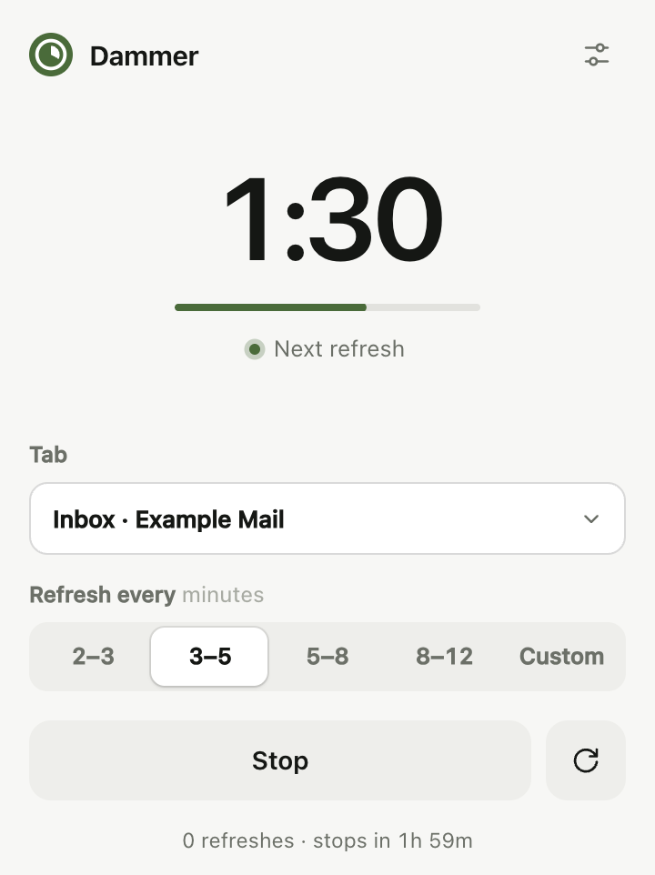
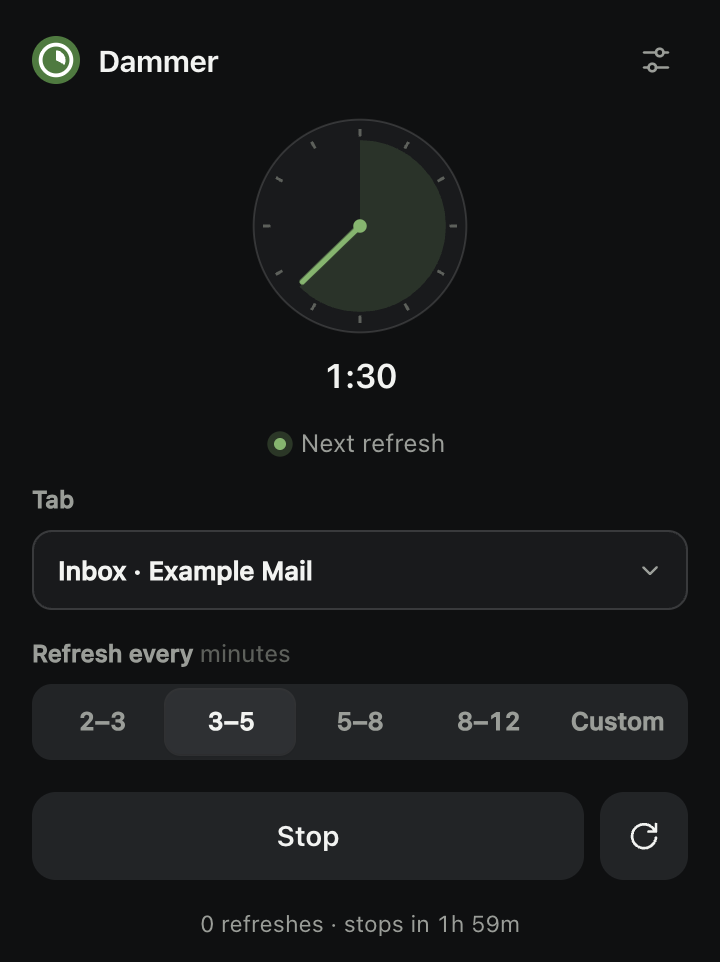
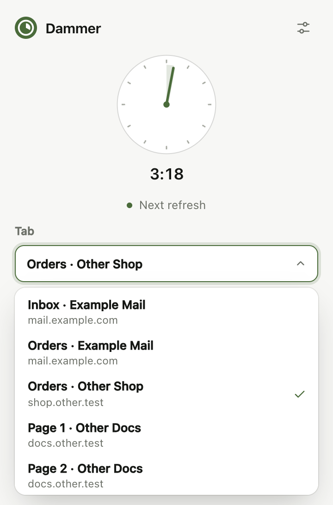
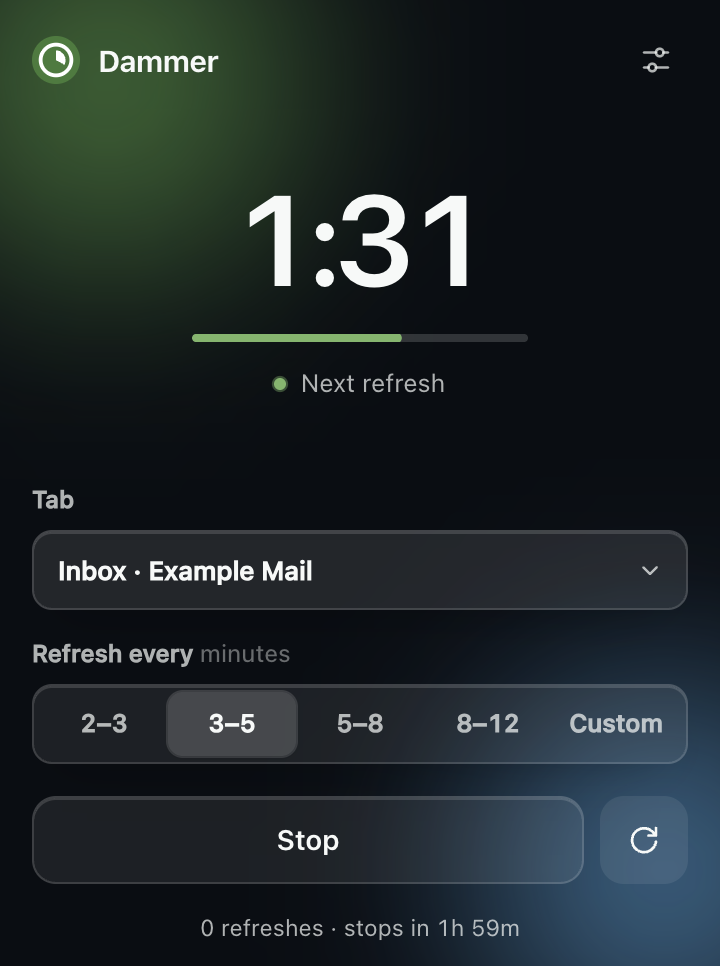
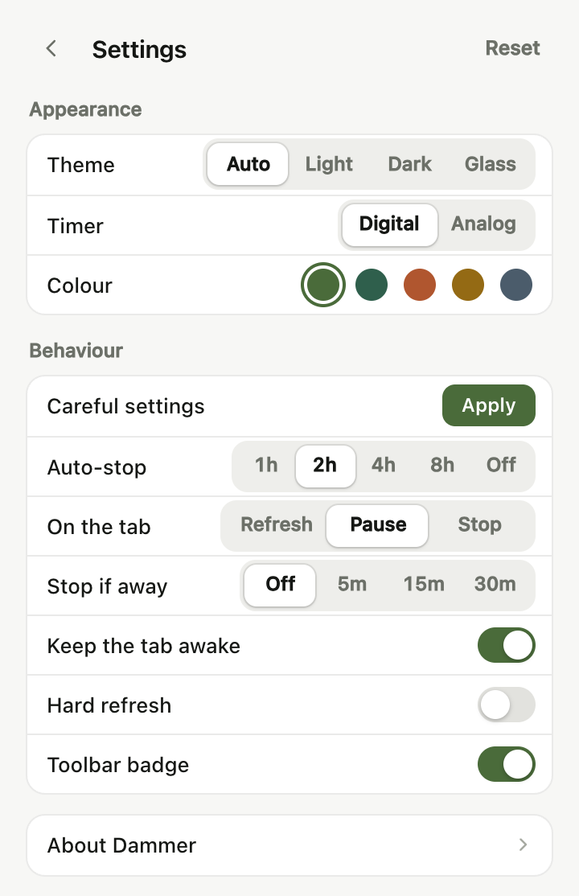
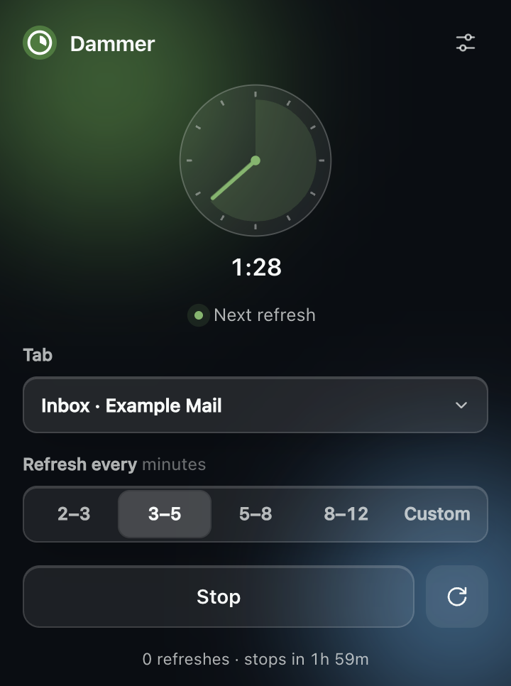
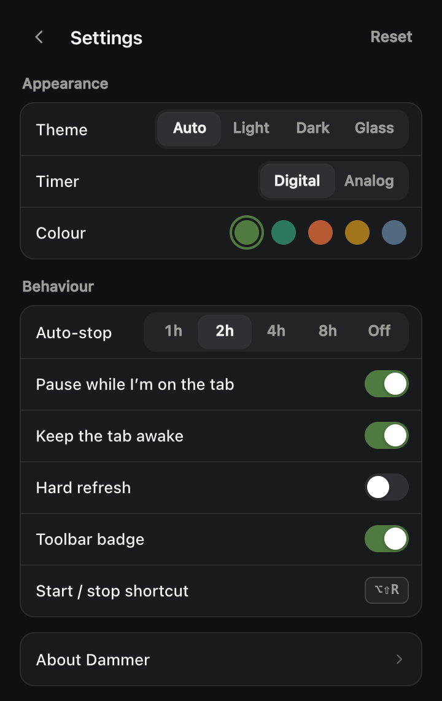
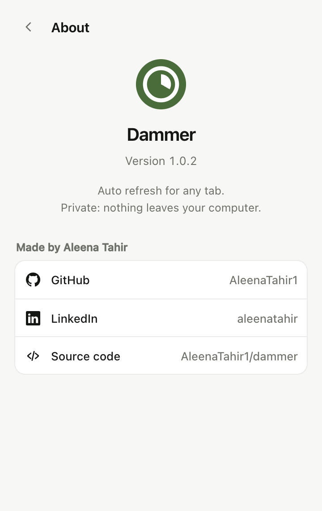

Free · open source · for Chrome
Any tab, refreshed.
Nothing else.
Dammer reloads a tab on a timer you set.
No accounts. No tracking. No network requests.
Pick a tab card. The demo below refreshes it for real.
The real extension, running live. Click around.
- 0
- network requests
- 4
- permissions
- 53
- checks in real Chrome
- 29KB
- download
How it works
One popup.
Four decisions.
Privacy
What it can’t do.
- Read what is on a page
- See passwords, cookies or forms
- Send anything, anywhere
- Load new code after install
These are not promises. The browser enforces them: Dammer’s security policy blocks every outgoing connection, and it asks for no access to the content of any site.
Read the privacy policyEvery screen
Small enough
to see it all.








- 1
Download the zip from the latest release and unzip it.
- 2
Open
chrome://extensionsand turn on Developer mode. - 3
Click Load unpacked and choose the unzipped folder.
Works in Chrome 120 or newer, and in Edge, Brave, Arc and Opera. Some websites do not allow automatic refreshing; check a site’s terms before using Dammer on it.